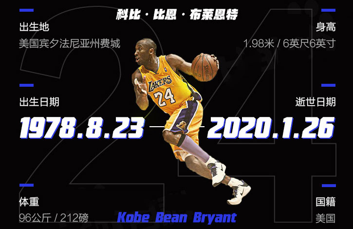

科比·比恩·布莱恩特（Kobe Bean Bryant，1978年8月23日—2020年1月26日），出生于美国宾夕法尼亚州费城，前美国职业篮球运动员，司职得分后卫/小前锋（锋卫摇摆人），绰号“黑曼巴”/“小飞侠”。
科比是前NBA球员乔·布莱恩特的儿子。在1996年NBA选秀中，科比于第1轮第13位被夏洛特黄蜂队选中，后被交易至洛杉矶湖人队，整个NBA生涯（1996年-2016年）都效力于洛杉矶湖人队。
科比的职业生涯随湖人队5夺NBA总冠军（2000年-2002年、2009年-2010年）；荣膺1次常规赛MVP（2007-08赛季），2次总决赛MVP（2009年-2010年），4次全明星赛MVP（2002年、2007年、2009年与2011年）；共18次入选NBA全明星阵容，15次入选NBA最佳阵容，12次入选NBA最佳防守阵容。
科比是NBA最好的得分手之一，生涯赢得无数奖项，突破、投篮、罚球、三分球他都驾轻就熟，几乎没有进攻盲区，单场比赛81分的纪录就有力地证明了这一点。除了疯狂的得分外，科比的组织能力也很出众，经常担任球队进攻的第一发起人。另外科比还是联盟中最好的防守人之一，贴身防守很具有压迫性。
2016年4月14日，科比·布莱恩特在生涯最后一场主场对阵爵士的常规赛后宣布退役。2017年12月19日，湖人主场对阵勇士，中场时刻为科比的8号和24号两件球衣举行了退役仪式。 [3] 2018年3月13日，科比凭借和动画师格兰·基恩合作的短片《亲爱的篮球》获第90届奥斯卡最佳短片奖。
当地时间2020年1月26日，科比在加州卡拉巴萨斯因直升机事故遇难，年仅41岁。

科比